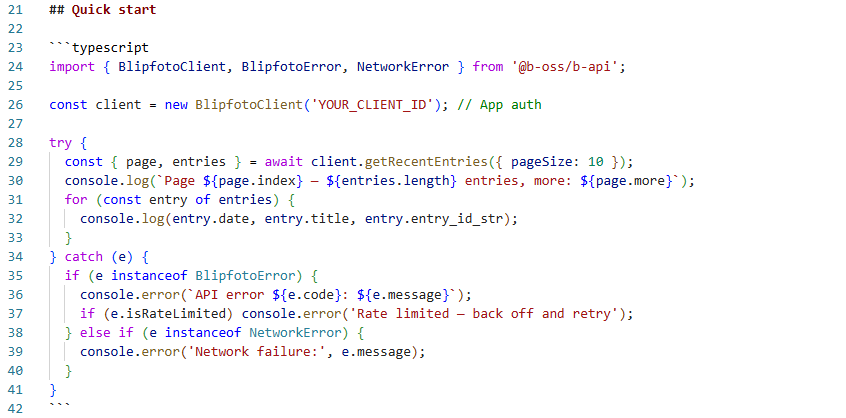

Open source tools for blipfoto.
Free to download, use, modify or build on.
About
b-oss = Blipfoto - Open Source Software
Open source means anyone can
see the source code, build the software themselves, modify it, and contribute
improvements back. If you have the skill and the interest, you can join the development
team.
b-oss was started by Ian Stevenson — a technologist with thirty years' experience as a software engineer and running software companies — using Claude Code and other AI tools for implementation. Ian is also one of the directors of blipfoto, but b-oss is a personal project and has no formal relationship with blipfoto.
b-ark : Backup & Archive
b-ark makes a local copy of every blip you've ever posted (images, text and metadata) on your own machine, automatically keeping it up to date. Browse offline, publish to the web, or hand over to AI tools to explore and create new formats.
- Backup. A local copy of every blip, updated automatically.
- View. Browse your archive offline in the built-in viewer.
- Publish. Copy the backup folder to any web host to publish.
- AI-ready. README.md for AI tools: Use AI to build photobooks, slideshows, statistics, custom sites.

b-api
b-api is the HTTP client that b-ark is built on. It covers the full Blipfoto v4 REST API and it works in browsers, Node.js 18+, and Electron alike. Clone the b-oss repository and import b-api directly into your TypeScript project.
- TypeScript. Full types for every request, response, and error. No guessing.
- Universal. No Node or Electron dependency. Works in browsers, Node.js 18+ and Electron.
- Complete. Journals, entries, CRUD, comments, social, OAuth, notifications, user settings.
-
Error-safe. Typed
BlipfotoErrorandNetworkErrorwith helpers for rate limits and token expiry.
